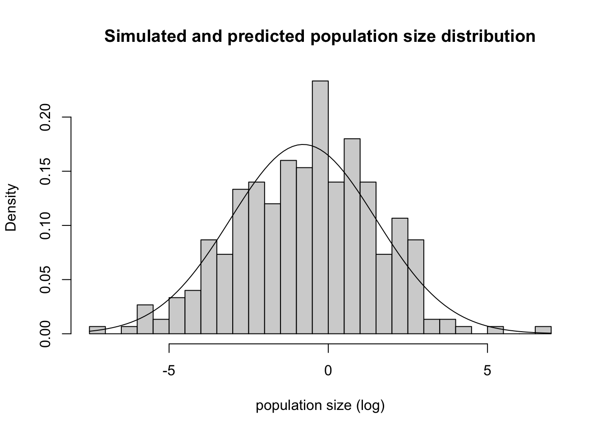

library(cmdstanr)
library(ggplot2)
library(tidyverse)
library(tidybayes)Background
How do species populations change over time?
How much of that change is caused by interactions with their community?
20 years ago a very influential paper was written by Ives, Dennis, Cottingham and Carpenter (Ives et al. 2003). Ives et al. present a method called a first-order Multivariate AutoRegressive model, also known as MAR(1). The core idea is that species are growing in a density-dependent way, but at a rate that is influenced by the per-capita effects of every other interacting population. A transition matrix captures the effects of each species on every other, and lets us predict how the vector species abundances changes over time.
Ives et al. advance this argument by beginning with univariate (single-species) approach, and that is what this post is about. Perhaps a future post will cover all the models.
\[ \begin{align} n_t &= n_{t - 1}e^{a + (b - 1)ln(n_{t-1})} \\ ln(n_t) = x_t &= a + bx_{t - 1} \end{align} \] We can predict the curve at any time \(t\) with this expression, from finite series:
\[ x_t = x_\infty + b^t(x_0 - x_\infty) \]
curve(200 + (.9)^x * (4 - 200), xlim = c(0, 100))However there might be variation every time step because growth rate differences are caused by lots of unmeasured things.
\[ \begin{align} X_t &= a + bX_{t-1} + \epsilon_t \\ \epsilon &\sim \text{Normal}(0, \sigma) \end{align} \]
This leads to a mean and variance at time \(t = \infty\)
\[ \begin{align} \mu_\infty &= \frac{a}{1 - b} \\ v_\infty &= \frac{\sigma^2}{1 - b^2} \end{align} \]
and the mean and variance at time \(t\)
\[ \begin{align} \mu_t &= \mu_\infty + b^t(x_0 - \mu_\infty) \\ v_t &= \sigma^2\frac{1 - (b^2)^t}{1 - b^2} = v_\infty(1 - b^{2t}) \end{align} \] Everything here is on the log scale. The result is something that we can work with in a model for the likelihood – the mean and variance of a normal distribution.
Simulations
Here are simulations from a one-species AR-1 model that imitate Ives et al. figure 1.
simulate_pop_growth <- function(
a = 0,
b,
sigma = 1,
tmax = 50,
x0 = -8) {
xvec <- numeric(tmax)
xvec[1] <- x0
## process error
eta <- rnorm(tmax, mean = 0, sd = sigma)
for(time in 2:tmax){
xvec[time] <- a + b*xvec[time-1] + eta[time]
}
return(xvec)
}
map_dfr(1:10, ~ tibble(pop = simulate_pop_growth(b = 0.6, tmax = 50),
time = 1:length(pop)), .id = "sim") |>
ggplot(aes(x = time, y = pop, group = sim)) +
geom_line() +
geom_hline(yintercept = 0) +
theme_bw()
map_dfr(1:10, ~ tibble(pop = simulate_pop_growth(b = 0.95, tmax = 50),
time = 1:length(pop)), .id = "sim") |>
ggplot(aes(x = time, y = pop, group = sim)) +
geom_line() +
geom_hline(yintercept = 0)+
theme_bw()
It’s fun to take a look at this curve after exponentiating it, so as to see the real population sizes.
map_dfr(1:10,
~ tibble(pop = simulate_pop_growth(
a = 3, b = 0.4, tmax = 10, sigma = 0.03),
time = 1:length(pop)), .id = "sim") |>
ggplot(aes(x = time, y = exp(pop), group = sim)) +
geom_line() +
geom_hline(yintercept = 0, lty = 2)
Functions for the mean and variance
We can also get a plot of the changing mean and variance over time. Just from playing with these, we can see what the simulations earlier showed: that variance depends on both the process error \(\sigma\) and on the parameter that controls the amount of density dependence, \(b\).
calc_mean <- function(a, b, time, n_start){
mu_max <- a / (1 - b)
mu_max + b^time * (n_start - mu_max)
}
calc_var <- function(b, time, sigma){
bsq <- b^2
var_max = sigma^2/(1 - bsq)
var_max * (1 - bsq^time)
}
curve(calc_mean(0, .8, n_start = -8, time = x), xlim = c(0, 50))curve(calc_var(.9, time = x, sigma = 1),
xlim = c(0,50), ylim = c(0, 10))
curve(calc_var(.8, time = x, sigma = 1), add = TRUE)
Do these numbers reflect the distribution we see in the simulations?
set.seed(5002)
some_sims <- map_dfr(1:300, ~ tibble(pop = simulate_pop_growth(b = 0.9, tmax = 30),
time = 0:(length(pop)-1)), .id = "sim")
sim_meanvar <- some_sims |>
group_by(time) |>
summarize(sim_mean = mean(pop),
sim_var = var(pop))
some_sims |>
filter(time == 22) |>
pluck("pop") |>
hist(probability = TRUE, breaks = 30, xlab = "population size (log)", main = "Simulated and predicted population size distribution")
curve(dnorm(x,
mean = calc_mean(a = 0, b = .9, time = 22, n_start = -8),
sd = sqrt(calc_var(b = .9, time = 22, sigma = 1))),
add = TRUE)
a_fig <- 0
b_fig <- 0.8
nstart_fig <- -8
sigma_fig <- 1
tibble(
time = 0:25,
mean = calc_mean(
a = a_fig, b = b_fig, time = time,
n_start = nstart_fig),
sd = sqrt(calc_var(
b = b_fig, time = time, sigma = sigma_fig))) |>
ggplot(aes(x = time,
ymin = mean - sd*2,
ymax = mean + sd*2,
y = mean)) +
geom_ribbon(fill = "lightblue")+
geom_line(col = "darkblue", lwd = 2) +
geom_line(
aes(x = time,
y = pop,
group = sim),
inherit.aes = FALSE,
data = map_dfr(1:10,
~ tibble(
pop = simulate_pop_growth(
a = a_fig,
b = b_fig,
tmax = 25,
sigma = sigma_fig),
time = 0:(length(pop)-1)
),
.id = "sim"
)
) +
NULL +
labs(x = "Time", y = "log population size")
Aphids
Below I explore this model and try to fit some examples in Stan. I’m building this example to match work being done at UdeS by students of Matt Barbour. In these experiments, a single aphid is placed on a radish plant. Aphids are clonal, and give birth to live (!) young.
Each colony, incredibly, starts with a single aphid. This simplifies the expressions for the average and the variance because the starting population size is \(ln(1) = 0\)
\[ \begin{align} \mu_t &= a\frac{1 - b^t}{1 - b} &= \mu_\infty(1 - b^t) \\ v_t &= \sigma^2\frac{1 - (b^2)^t}{1 - b^2} &= v_\infty(1 - b^{2t}) \end{align} \]
The entire experiment fits on a single tray in a growth chamber, and Katerie replicated the experiment 6 times.
Math: a model for one clone
When we are making replicates observations of a single clone, we only need to know four quantites to predict both the average and the variation around that average: \(a\), \(b\), \(\sigma\) and the time that passed since the start, \(t\)
Here is the full Bayesian model with priors. I used prior simulations to come up with these numbers (that’s the next section below!)
\[ \begin{align} x_{i} &\sim \text{Normal}(\mu_t, \sqrt{v_t})\\ \mu_t &= \mu_\infty(1 - b^t) \\ v_t &= v_\infty(1 - b^{2t}) \\ \mu_\infty &= \frac{a}{1 - b} \\ v_\infty &= \frac{\sigma^2}{1 - b^2} \\ a &\sim \text{Normal}(2, .5) \\ b &\sim \text{Beta}(5, 2) \\ \sigma &\sim \text{Exponential}(1) \\ \end{align} \]
Make fake data
Simulating from the data-generating model
sim_one_gompertz <- function(K = 1000,
a = 1,
b = 0.86,
s = .3,
ntime = 15){
N = c(0,
rnorm(ntime - 1,
mean = a * (1 - b^(1:(ntime-1))) / (1 - b),
sd = s * (1 - (b^2)^(1:(ntime-1))) / (1 - b^2)
)
)
return(tibble(N = N, time = 0:(ntime-1)))
}
map_df(1:6, ~ list(sim_one_gompertz()), .id = "sim_id") |>
ggplot(aes(x = time, y = N, group = sim_id)) +
geom_line()
# load the model in stan
ar_1 <- cmdstan_model(here::here("posts/2023-11-15-ives03-ts/ar1.stan"))
ar_1data{
int n;
vector[n] time;
vector[n] x;
}
// transformed data {
// vector[n] x = log(pop);
// }
parameters {
real<lower=0> a;
real<lower=0,upper=1> b;
real<lower=0> sigma;
}
transformed parameters {
real mu_max = a / (1 - b);
real sigma_max = sigma /sqrt(1 - b^2);
}
model {
a ~ normal(2, .5);
b ~ beta(5,2);
sigma ~ exponential(5);
x ~ normal(
mu_max .* (1 - pow(b, time)),
sigma_max .* sqrt(1 - pow(b^2, time))
);
}
generated quantities {
vector[15] x_pred;
x_pred[1] = 0;
for (j in 1:14) {
x_pred[j+1] = normal_rng(
mu_max * (1 - pow(b, j)),
sigma_max * sqrt(1 - pow(b^2, j))
);
}
}gomp_one_pop_df <- map_df(1:6, ~ list(
sim_one_gompertz()), .id = "sim_id")
gomp_nozero <- gomp_one_pop_df |>
filter(time != 0)
gomp_ar_1_sample <- ar_1$sample(data = list(n = nrow(gomp_nozero),
x = gomp_nozero$N,
time = gomp_nozero$time),
parallel_chains = 4, refresh = 0)Running MCMC with 4 parallel chains...
Chain 2 finished in 0.9 seconds.
Chain 1 finished in 1.0 seconds.
Chain 3 finished in 0.9 seconds.
Chain 4 finished in 0.9 seconds.
All 4 chains finished successfully.
Mean chain execution time: 0.9 seconds.
Total execution time: 1.2 seconds.gomp_ar_1_sample |>
spread_rvars(x_pred[time]) |>
ggplot(aes(x = time-1, ydist = x_pred)) +
stat_lineribbon() +
scale_fill_brewer(palette = "Greens", direction = -1) +
theme_bw() +
geom_line(aes(x = time, y = N, group = sim_id),
inherit.aes = FALSE, data = gomp_one_pop_df) +
labs(x = "Time", y = "log population size")
gomp_ar_1_sample$summary(variables = c("a", "b", "sigma",
"mu_max", "sigma_max")) |>
knitr::kable()| variable | mean | median | sd | mad | q5 | q95 | rhat | ess_bulk | ess_tail |
|---|---|---|---|---|---|---|---|---|---|
| a | 0.8755229 | 0.8715515 | 0.0653034 | 0.0640476 | 0.7744877 | 0.9901877 | 1.002237 | 1274.784 | 1329.060 |
| b | 0.8919885 | 0.8926680 | 0.0188091 | 0.0186207 | 0.8595486 | 0.9219138 | 1.002168 | 1276.568 | 1300.837 |
| sigma | 0.5386121 | 0.5334915 | 0.0482727 | 0.0461511 | 0.4668362 | 0.6243722 | 1.004019 | 1438.492 | 1641.133 |
| mu_max | 8.2620125 | 8.1184950 | 0.9562658 | 0.8650823 | 6.9728300 | 10.0094000 | 1.002092 | 1446.378 | 1782.139 |
| sigma_max | 1.2005219 | 1.1903850 | 0.1052177 | 0.1015655 | 1.0467550 | 1.3880110 | 1.002135 | 1844.450 | 1556.341 |
Say it again but different: parameterizing based on \(\mu\) and \(\sigma\)
It might be easier to set priors directly on equilibrium population size (\(\mu_\infty\)) and variance at equilibrium (\(v_\infty\)) so I experimented with parameterizing the model directly that way. It works just as well!
# load the model in stan
ar1_mu_sigma <- cmdstan_model(here::here("posts/2023-11-15-ives03-ts/ar1_mu_sigma.stan"))
ar1_mu_sigmadata{
int n;
vector[n] time;
vector[n] x;
}
// transformed data {
// vector[n] x = log(pop);
// }
parameters {
real mu_max;
real<lower=0,upper=1> b;
real<lower=0> sigma_max;
}
transformed parameters {
// real mu_max = a / (1 - b);
// real sigma_max = sigma /sqrt(1 - b^2);
}
model {
mu_max ~ normal(7, .5);
b ~ beta(5,2);
sigma_max ~ exponential(1);
x ~ normal(
mu_max .* (1 - pow(b, time)),
sigma_max .* sqrt(1 - pow(b^2, time))
);
}
generated quantities {
vector[15] x_pred;
x_pred[1] = 0;
for (j in 1:14) {
x_pred[j+1] = normal_rng(
mu_max * (1 - pow(b, j)),
sigma_max * sqrt(1 - pow(b^2, j))
);
}
}gomp_ar1_mu_sigma_sample <- ar1_mu_sigma$sample(
data = list(n = nrow(gomp_nozero),
x = gomp_nozero$N,
time = gomp_nozero$time),
parallel_chains = 4, refresh = 0)Running MCMC with 4 parallel chains...
Chain 1 finished in 1.3 seconds.
Chain 2 finished in 1.3 seconds.
Chain 3 finished in 1.2 seconds.
Chain 4 finished in 1.2 seconds.
All 4 chains finished successfully.
Mean chain execution time: 1.2 seconds.
Total execution time: 1.5 seconds.gomp_ar1_mu_sigma_sample |>
spread_rvars(x_pred[time]) |>
ggplot(aes(x = time-1, ydist = x_pred)) +
stat_lineribbon() +
scale_fill_brewer(palette = "Greens", direction = -1) +
theme_bw() +
geom_line(aes(x = time, y = N, group = sim_id),
inherit.aes = FALSE, data = gomp_one_pop_df)
gomp_ar1_mu_sigma_sample$summary(variables = c("mu_max", "b", "sigma_max")) |>
knitr::kable()| variable | mean | median | sd | mad | q5 | q95 | rhat | ess_bulk | ess_tail |
|---|---|---|---|---|---|---|---|---|---|
| mu_max | 7.4195465 | 7.408785 | 0.3897996 | 0.3887970 | 6.8015800 | 8.0852720 | 1.003136 | 1324.390 | 1827.973 |
| b | 0.8758691 | 0.876516 | 0.0121230 | 0.0118971 | 0.8543245 | 0.8948875 | 1.002905 | 1356.657 | 1740.710 |
| sigma_max | 1.1726875 | 1.167125 | 0.0945322 | 0.0938486 | 1.0264060 | 1.3328110 | 1.000760 | 2029.433 | 1859.360 |
More than one model at once
Here is a no-pooling approach to modelling different clones.
ar1_multispp <- cmdstan_model(here::here("posts/2023-11-15-ives03-ts/ar1_multispp.stan"))
ar1_multisppdata{
int n;
int nclone;
vector[n] time;
vector[n] x;
array[n] int<lower=1, upper=nclone> clone_id;
}
// transformed data {
// vector[n] x = log(pop);
// }
parameters {
vector[nclone] log_a;
vector[nclone] logit_b;
vector[nclone] log_sigma;
}
transformed parameters {
vector[nclone] b = inv_logit(logit_b);
vector[nclone] mu_max = exp(log_a) ./ (1 - b);
vector[nclone] sigma_max = exp(log_sigma) ./ sqrt(1 - b^2);
}
model {
log_a ~ normal(.7, .2);
logit_b ~ normal(1, .2);
log_sigma ~ normal(-1.5, .5);
x ~ normal(
mu_max[clone_id] .* (1 - pow(b[clone_id], time)),
sigma_max[clone_id] .* sqrt(1 - pow(b[clone_id]^2, time))
);
}
generated quantities {
matrix[15, nclone] x_pred;
x_pred[1,] = rep_row_vector(0, nclone);
for (s in 1:nclone){
for (j in 1:14) {
x_pred[j+1,s] = normal_rng(
mu_max[s] .* (1 - pow(b[s], j)),
sigma_max[s] .* sqrt(1 - pow(b[s]^2, j))
);
}
}
}A few things are different in this model compared to the previous one:
- I’m passing in ID numbers for each clone, and an integer number for maximum number of clones
- the model parameters are now vectors, not scalars
- I’ve also put the parameters on different scale. This will come in handy later when the model becomes hierarchical. Whenever I personally do this, I also change the names (see Note below).
- The predictions are now a matrix. This is because we need two different pieces of information for each observation: what time it is, and which clone we’re talking about.
Call me by your name
This code shows off a habit I’ve developed over the last few months of working on Bayesian models. When I put a parameter on a link scale, I change the parameter name to add the name of that link scale.
For example, you might have a strictly positive parameter and model it like this:
parameters {
real<lower=0> alpha;
}
model {
alpha ~ normal(1, .5);
....
}But then you might decide to model that on a log scale, either to reparameterize or to prepare for making it hierarchical later. Using link functions like the log and logit is standard in hiearchical models because it allows us to calculate a different value for every group, above and below the overall average, while respecting any constraints
parameters {
real alpha_log;
}
model {
alpha_log ~ normal(0, .2);
}I don’t usually try to make sure the prior is EXACTLY equivalent, but its usually pretty straightforward to get kind of close.
To validate this model, I’m going to generate 6 aphid clones by choosing parameters for a and b from different
as <- runif(n = 6, min = 1.5, max = 2.5)
bs <- runif(n = 6, min = .4, max = .9)
gomp_many_df <- expand_grid(clone_id = 1:6, rep_id = 1:10) |>
mutate(a = as[clone_id],
b = bs[clone_id]) |>
rowwise() |>
mutate(x = list(sim_one_gompertz(a = a, b = b)))
gomp_nozero_many_df <- gomp_many_df |>
unnest(x) |>
filter(time != 0)
gomp_nozero_many_df |>
ggplot(aes(x = time, y = N, group = rep_id)) +
geom_line() +
facet_wrap(~clone_id)ar1_multispp_samp <- ar1_multispp$sample(
data = list(n = nrow(gomp_nozero_many_df),
nclone = max(gomp_nozero_many_df$clone_id),
time = gomp_nozero_many_df$time,
x = gomp_nozero_many_df$N,
clone_id = gomp_nozero_many_df$clone_id),
parallel_chains = 4,
refresh = 0
)Running MCMC with 4 parallel chains...
Chain 2 finished in 23.8 seconds.
Chain 1 finished in 24.2 seconds.
Chain 3 finished in 24.1 seconds.
Chain 4 finished in 24.1 seconds.
All 4 chains finished successfully.
Mean chain execution time: 24.0 seconds.
Total execution time: 24.3 seconds.ar1_multispp_samp variable mean median sd mad q5 q95 rhat ess_bulk ess_tail
lp__ 79.64 79.98 3.07 3.01 74.05 84.00 1.00 1728 2506
log_a[1] 0.86 0.86 0.02 0.02 0.83 0.90 1.00 4228 2969
log_a[2] 0.58 0.58 0.03 0.03 0.52 0.63 1.00 4768 2881
log_a[3] 0.79 0.79 0.03 0.03 0.75 0.83 1.00 4648 2895
log_a[4] 0.56 0.56 0.03 0.03 0.50 0.61 1.00 4467 2727
log_a[5] 0.52 0.51 0.03 0.03 0.47 0.57 1.00 4103 3076
log_a[6] 0.85 0.85 0.03 0.02 0.81 0.90 1.00 4921 2812
logit_b[1] 1.17 1.17 0.04 0.04 1.10 1.24 1.00 4148 2972
logit_b[2] 0.59 0.59 0.06 0.06 0.48 0.69 1.00 4790 2715
logit_b[3] 0.59 0.59 0.05 0.05 0.51 0.67 1.00 4720 2849
# showing 10 of 127 rows (change via 'max_rows' argument or 'cmdstanr_max_rows' option)ar1_multispp_samp |>
gather_rvars(x_pred[time,clone_id]) |>
ggplot(aes(x = time-1, ydist = .value)) + stat_lineribbon() +
facet_wrap(~clone_id) +
scale_fill_brewer(palette = "Greens") +
## add data
geom_line(aes(x = time, y = N, group = rep_id),
data = gomp_nozero_many_df,
inherit.aes = FALSE)
Time equals 🫖 - 1
One of the trickiest parts of working with these models has been adding and subtracting \(1\). Here’s some notes for the next time I get confused:
- take out the first value We can’t use data including
time=0in a stan model because that implies 0 variance, which just causes lots of errors with the normal likelihood. Taking this point out is no loss, because it doesn’t give us any real information – there’s no variance at all. - using position in the matrix as data for predictions I generate predictions for new clonal lines, in order to generate the posterior predictive distribution and plot the figures. I store these predictions in a matrix. However, the first observation (
time = 0) is actually stored in the first position of the matrix (i.e., row 1). I just evaluate time as all the integers between 0 and 14, which gives two weeks of experiment in this case. You can see in thegenerated quantitiesblock that I actually use the index value in the for-loop (I called itj) as the value of time. This requires a weird trick: the value ofjgets used, but then it is placed in thej+1position in the vector. This is because there is no “row 0” to go with the observation at time 0, so everything is pushed up by 1. - subtract 1 to get the correct time This means that to get the right time, we need to subtract 1 from the value used in
generated quantities. When I usetidybayesto extract the predictive distribution, I usegather_rvars(x_pred[time,clone_id])to specify that I want to call the first dimension of the matrix “time”, and the second “clone_id”. But then when I plot these data, I need to subtract 1 from the row position of a prediction to get the actual time value. This is because time = 0 is in row 1, time = 1 is in row 2, etc. Doing this gives a figure where model predictions match
Hierarchical model
ar1_multilevel <- cmdstan_model(here::here("posts/2023-11-15-ives03-ts/ar1_multilevel.stan"))
ar1_multilevel// modified from previous models with help from ChatGPT!
data {
int n;
int nclone;
vector[n] time;
vector[n] x;
array[n] int<lower=1, upper=nclone> clone_id;
}
transformed data{
vector[n] twotime = 2 * time;
}
parameters {
vector[nclone] mu_log_a;
vector[nclone] mu_logit_b;
vector[nclone] mu_log_sigma;
cholesky_factor_corr[3] L_corr; // Cholesky factorization of the correlation matrix
vector<lower=0>[3] sigma_params; // Standard deviations for log_a, logit_b, log_sigma
matrix[nclone, 3] z_params_raw; // Unconstrained parameters
}
transformed parameters {
matrix[nclone, 3] z_params = z_params_raw * diag_pre_multiply(sigma_params, L_corr);
vector[nclone] log_a = mu_log_a + z_params[,1];
vector[nclone] logit_b = mu_logit_b + z_params[,2];
vector[nclone] log_sigma = mu_log_sigma + z_params[,3];
vector[nclone] b = inv_logit(logit_b);
vector[nclone] mu_max = exp(log_a - log1m_inv_logit(b));
vector[nclone] sigma_max = exp(log_sigma) ./ sqrt(1 - square(b));
}
model {
mu_log_a ~ normal(0.7, 0.2);
mu_logit_b ~ normal(1.7, 0.2);
mu_log_sigma ~ normal(-.7, 0.25);
L_corr ~ lkj_corr_cholesky(4); // Prior on the Cholesky factor for the correlation matrix
sigma_params[1] ~ exponential(4);
sigma_params[2] ~ exponential(4);
sigma_params[3] ~ exponential(3.5);
to_vector(z_params_raw) ~ std_normal();
x ~ normal(
mu_max[clone_id] .* (1 - pow(b[clone_id], time)),
sigma_max[clone_id] .* sqrt(1 - pow(b[clone_id], twotime))
);
}
generated quantities {
matrix[15, nclone] x_pred;
x_pred[1,] = rep_row_vector(0, nclone);
for (s in 1:nclone){
for (j in 1:14) {
x_pred[j+1,s] = normal_rng(
mu_max[s] .* (1 - pow(b[s], j)),
sigma_max[s] .* sqrt(1 - pow(b[s]^2, j))
);
}
}
}ar1_multilevel_samp <- ar1_multilevel$sample(
data = list(n = nrow(gomp_nozero_many_df),
nclone = max(gomp_nozero_many_df$clone_id),
time = gomp_nozero_many_df$time,
x = gomp_nozero_many_df$N,
clone_id = gomp_nozero_many_df$clone_id),
parallel_chains = 4,
refresh = 500
)
ar1_multilevel_sampWe can fit to previous simulations no problem, but we can also simulate data directly from the model. Because this has gotten kind of big, I’m going to make a Stan program just for simulating data
ar1_multilevel_prior <- cmdstan_model(here::here("posts/2023-11-15-ives03-ts/ar1_multilevel_prior.stan"))
ar1_multilevel_prior// modified from previous models with help from ChatGPT!
data {
int nclone;
int nrep;
}
parameters {
vector[nclone] mu_log_a;
vector[nclone] mu_logit_b;
vector[nclone] mu_log_sigma;
cholesky_factor_corr[3] L_corr; // Cholesky factorization of the correlation matrix
vector<lower=0>[3] sigma_params; // Standard deviations for log_a, logit_b, log_sigma
matrix[nclone, 3] z_params_raw; // Unconstrained parameters
}
transformed parameters {
matrix[nclone, 3] z_params = z_params_raw * diag_pre_multiply(sigma_params, L_corr);
vector[nclone] log_a = mu_log_a + z_params[,1];
vector[nclone] logit_b = mu_logit_b + z_params[,2];
vector[nclone] log_sigma = mu_log_sigma + z_params[,3];
vector[nclone] b = inv_logit(logit_b);
vector[nclone] mu_max = exp(log_a - log1m_inv_logit(b));
vector[nclone] sigma_max = exp(log_sigma) ./ sqrt(1 - square(b));
}
model {
mu_log_a ~ normal(0.7, 0.2);
mu_logit_b ~ normal(1.7, 0.2);
mu_log_sigma ~ normal(-.7, 0.25);
L_corr ~ lkj_corr_cholesky(4); // Prior on the Cholesky factor for the correlation matrix
sigma_params[1] ~ exponential(4);
sigma_params[2] ~ exponential(4);
sigma_params[3] ~ exponential(3.5);
to_vector(z_params_raw) ~ std_normal();
}
generated quantities {
array[nclone, nrep, 15] real x_pred;
for (s in 1:nclone){
for (r in 1:nrep){
x_pred[s, r, 1] = 0;
}
}
for (s in 1:nclone){
for (r in 1:nrep){
for (j in 1:14) {
x_pred[s, r, j+1] = normal_rng(
mu_max[s] .* (1 - pow(b[s], j)),
sigma_max[s] .* sqrt(1 - pow(b[s]^2, j))
);
}
}
}
}This model code lacks the likelihood, but uses the same configuration as the previous non-centered model. It also has a bit more going on the Generated Quantities block. Here, we are simulating multiple replicates using each clone, which simulates the actual experiment.
We can sample from this prior distribution and visualize it to see what it says. This is really the only way to get a good idea of what priors really mean in a nonlinear model like this one!
multilevel_prior <- ar1_multilevel_prior$sample(
data = list(nclone = 12, nrep = 10),
chains = 1,
refresh = 0)Running MCMC with 1 chain...
Chain 1 finished in 1.5 seconds.prior_pred_multilevel <- multilevel_prior |>
gather_draws(x_pred[clone_id, rep, time], ndraws = 1) |>
mutate(time = time -1)
prior_pred_multilevel |>
ggplot(aes(x = time, y = .value, group = rep)) +
geom_line() +
facet_wrap(~clone_id)Finally we can put this model through a very similar process of fitting and plotting as previous. Here I’m doing data prep, sampling and plotting all in one plot.
prior_df <- prior_pred_multilevel |>
filter(time != 0)
ar1_multilevel_samp <- ar1_multilevel$sample(
data = list(n = nrow(prior_df),
nclone = max(prior_df$clone_id),
time = prior_df$time,
x = prior_df$.value,
clone_id = prior_df$clone_id),
parallel_chains = 4,
refresh = 0
)Running MCMC with 4 parallel chains...
Chain 2 finished in 466.2 seconds.
Chain 3 finished in 472.9 seconds.
Chain 4 finished in 473.9 seconds.
Chain 1 finished in 475.6 seconds.
All 4 chains finished successfully.
Mean chain execution time: 472.2 seconds.
Total execution time: 475.6 seconds.# ar1_multilevel_samp
ar1_multilevel_samp |>
gather_rvars(x_pred[time,clone_id]) |>
ggplot(aes(x = time-1, ydist = .value)) + stat_lineribbon() +
facet_wrap(~clone_id) +
scale_fill_brewer(palette = "Greens") +
## add data
geom_line(aes(x = time, y = .value, group = rep),
data = prior_pred_multilevel,
inherit.aes = FALSE, col = "darkorange", alpha = .3) +
labs(y = "Population size (log)",
x = "Time")Note that this did not work perfectly, even though we are fitting to the prior predictive distribution. There are divergent iterations!
ar1_multilevel_samp$diagnostic_summary()$num_divergent
[1] 2 2 6 1
$num_max_treedepth
[1] 0 0 0 0
$ebfmi
[1] 0.8415368 1.0193399 0.8426104 0.9076898References
Ives, A. R., B. Dennis, K. L. Cottingham, and S. R. Carpenter. 2003. “ESTIMATING COMMUNITY STABILITY AND ECOLOGICAL INTERACTIONS FROM TIME-SERIES DATA.” Ecological Monographs 73 (2): 301–30. https://doi.org/10.1890/0012-9615(2003)073[0301:ECSAEI]2.0.CO;2.